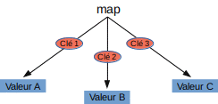
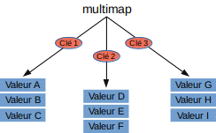

Map
Une std::map est un conteneur
associatif qui stocke des valeurs accessibles par une clé, qui doit
être unique. À chaque clé est associé une valeur unique.
Structure d’une map

Structure d’une multimap

Pas de constructeur par taille
Constructeur par intervalle d’itérateurs :
multimap(InputIterator first, InputIterator last);
Construit la multimap dans l’intervalle [first ; last[ (first est inclu mais last n’est pas inclus).
Prend en paramètre un itérateur dans une seule direction en lecture uniquement (un InputIterator).
Constructeur par liste d’initialisation
multimap(initializer_list<value_type> il);
Construit la multimap suivant une liste de valeur de taille non définie.
On peut ainsi instancier la multimap comme ceci, en instanciant les paires eux-mêmes grâce aux listes d’initialisation :
multimap<int, int> mymap = {{0, 0}, {0, 1}, {1, 1}};
Constructeur par copie
multimap(const multimap& o);
Copie une map selon l’intervalle [o.begin();o.end()[, en connaissant la position de chaque élément à inserer.
Constructeur par déplacement
multimap(multimap&&);
Assignation par copie
multimap& operator=(multimap&&);
Assignation par déplacement
multimap& operator=(const multimap&);
Tous les modificateurs (sauf les emplace*) et les opérations (s'il y en de définies).
Clear
insert
emplace
emplace_hint
erase
La multimap est implémenté en utilisant des itérateurs bidirectionnels. Pour chaque élé